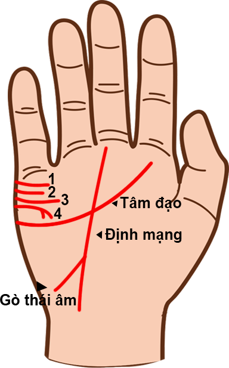

Đường tâm đạo thể hiện bản chất đời sống của bạn Đường tâm đạo thể hiện tất cả những vấn đề
liên quan đến con tim: tình yêu, sự lãng mạn, các mối quan hệ gia đình và bè bạn. Nó cho
thấy mức độ hài lòng và hạnh phúc của mỗi người trong cuộc sống, cũng như bản chất của người
đó trong các mối quan hệ (các mối quan hệ đó trầm lắng hay sôi nổi, lâu dài hay ngắn ngủi).
Đường tâm đạo càng dài, quan hệ càng bền. Nói chung, đường tâm đạo thể hiện đời sống tình
cảm và tính lãng mạn của con người.
1. Đường tâm đạo ở vị trí thấp trong lòng bàn tay. Đường tâm đạo xuất phát từ dưới các gốc ngón tay trong lòng bàn tay. Những người này có tình yêu nhẹ nhàng và lãng mạn, họ tin tưởng ở tình yêu và chỉ tìm kiếm sự hoàn hảo “chỉ có trong cổ tích”. Đối với các vấn đề liên quan đến trái tim, họ có thể trở thành người theo chủ nghĩa hoàn hảo và mong đợi quá nhiều vào người yêu mình. Kỳ vọng này có thể làm họ cảm thấy vỡ mộng.
2. Đường tâm đạo ở vị trí cao trong lòng bàn tay Đường tâm đạo xuất phát từ trên hoặc phía trên của phần dưới các gốc ngón tay trong lòng bàn tay, và có vẻ như nằm ở gần gốc các ngón tay hơn trường hợp thứ nhất. Họ cực kỳ nhạy cảm trước những suy nghĩ của người khác về họ. Do vậy, họ có thể khá tiêu cực vì luôn chỉ trích mình. Họ có xu hướng rất kin đáo về mặc tình cảm.
3. Đường tâm đạo hướng về ngón tay giữa hoặc ngón tay trỏ Đường tâm đạo này cho thấy một người có ảnh hưởng lớn và luôn đòi hỏi, luôn thể hiện tình cảm một cách thẳng thắn. Người có tâm đạo hướng về gò Thổ Tinh (ngón tay giữa) sẽ có một cuộc sống gia đình rất toại nguyện. Họ biết cách làm các thành viên trong gia đình trở nên gần gũi, cả về vật chất lẫn tình cảm. Hướng về phía Mộc Tinh (phía dưới ngón tay trỏ), đường tâm đạo cho thấy một người rất thành công trong tình yêu. Họ sẵn sàng chết vì yêu, và tình yêu của họ cho sẽ được đáp lại. Đường tâm đạo ngắn và ở vị trí cao Lòng chung thủy và ý chí của người này rất dễ bị lung lay: họ tin rằng tình dục mới là lời giả thích cho tình yêu. Nếu cảm thấy không được yêu hoặc bị thờ ơ, hoặc có ai đó quan tâm nhiều đến mình, họ có thể thay lòng đổi dạ rất dễ dàng.
4. Đường tâm đạo ngắn và ở vị trí thấp Người này không thể chung thủy bởi họ nghĩ rằng tình dục là một trò chơi hoặc một môn thể thao. Họ rất buôn thả và cho rằng nếu họ không nói gì về các việc mình làm thì chẳng tổn hại đến ai. Vì thế họ cũng là người hay tự dối mình.
5. Đường tâm đạo tiếp xúc với đường trí đạo và đường sinh đạo Khi đường tâm đạo hạ thấp xuống, tiếp xúc với đường trí đạo và đường sinh đạo, nó cho thấy một người mong muốn một điều tốt nhất ở cả hai thế giới: được hạnh phúc ở nhà và cả nơi làm việc. Họ cần tình yêu nhưng cũng có tính độc lập cao. Đôi lúc họ có thể bị phân tán bởi gia đình và sự nghiệp, nhưng sẽ tìm ra cách sấp xếp thời gian cho cả hai và có được giải pháp công bằng, hạnh phúc theo cách của riêng họ.
6. Đường tâm đạo chạy ngang qua lòng bàn tay Đường tâm đạo chạy thẳng qua lòng bàn tay thể hiện một người theo chủ nghĩa nhân đạo với cảm nhận sâu sắc về mục đích sống. Người này sẽ dành rất nhiều thời gian và công sức để nổ lực làm việc cho sự tốt đẹp của cộng đồng. Họ sẽ gặp may mắn lớn trong cuộc đời nhờ bản tính luôn nghĩ dến người khác của minh.